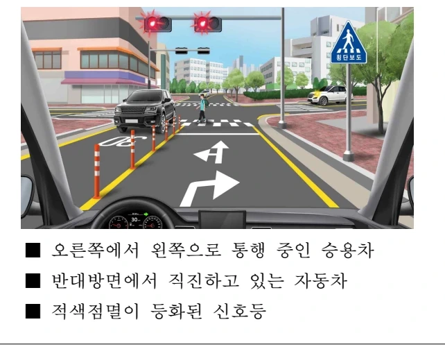

806. You are about to turn right while approaching an intersection. Which of the following are the safest ways to drive? (Select TWO)

- ①The child is crossing to the left, so you use the space on the right to enter and turn right.
- ②Watch out for vehicles entering from the opposite direction to see if they are turning left.
- ③Stop at the stop line just before the crosswalk and wait for the child to complete crossing.
- ④Accelerate through the stop line to enter the intersection ahead of oncoming traffic.
- ⑤Enter slowly and turn right at the signal with caution.
Show answer
Answer
② Watch out for vehicles entering from the opposite direction to see if they are turning left.
③ Stop at the stop line just before the crosswalk and wait for the child to complete crossing.
Reference
In the situation presented, a child is crossing the road. At this time, drivers must stop at the stop line installed just before the crosswalk. At this time, drivers who want to turn right must wait until pedestrians at the crosswalk complete the crossing. Also, a car entering the intersection from the opposite direction is a car trying to turn left, so you must wait until that car completes its left turn. After that, you must check that all directions are safe and turn right. Flashing red is a signal instructing to enter after a temporary stop.
Reference text is a machine translation for study.